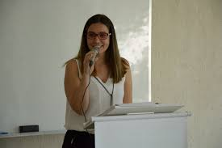

Professora Cristiane Norbiato Targa
Cristiane tem mestrado em Computação Aplicada e Automação pela Universidade Federal Fluminense (2002), graduação pela Universidade Federal de Juiz de Fora (2000), e foi professora na Universidade Federal de Ouro Preto, além disso, como dito anteriormente ela é professora no IFMG.
É importante destacar a grande relevância das atuações da professora Cristiane em promover acessibilidade e informação tecnológica a comunidade de Sabará e região, tais como:
- O programa Sabará for Women, que objetivou a promoção e o incentivo do acesso de mulheres em áreas de tecnologia do município de Sabará emitigando a evasão escolar e promovendo uma sociedade mais inclusiva em que o gênero das crianças não predetermine suas profissões futuras. Este projeto apresenta-se como um desdobramento do programa de extensão Programa Sabará, realizado pelo Instituto Federal de Educação de Minas Gerais campus Sabará desde 2016 e atende escolas públicas da cidade.
- O projeto "Conectividade: Inclusão Digital da Terceira Idade", que tem como objetivo tornar o ambiente digital mais acessível para pessoas da terceira idade, que recebeu o prêmio da Pró-reitoria de Extensão pela Apresentação de Trabalhos da Semana Nacional de Ciência e Tecnologia (SNCT) de 2021.
Caso deseje voltar à página inicial e conhecer as demais disciplinas técnicas clique no botão abaixo.
Site desenvolvido por:Diogo Gabriel Gouveia Clemente e Evelyn Vitória Américo dos Santos